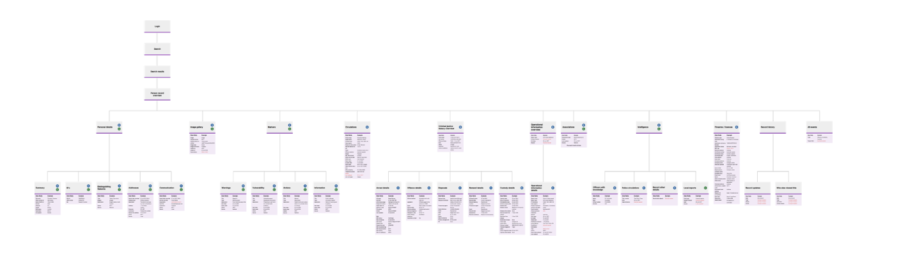
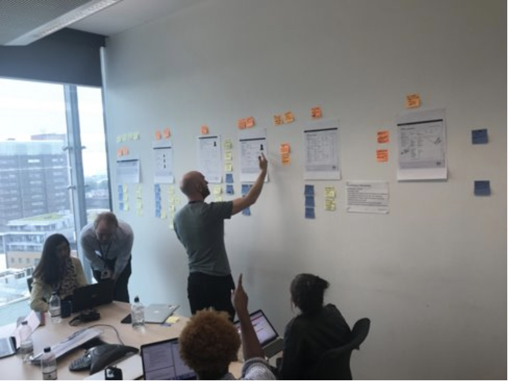

An alpha stage project looking at providing information to users on the next steps of an application. Handed over an existing tool that was created by another team which we worked on to iterate and make it suitable for users.
The existing system in use is a legacy system that is looking to be replaced. By designing a replacement system, it will save money for the Home Office and improve the user experience by combining two legacy systems into one.
Research has shown that many job tasks involve searching and finding information quickly and reacting to a task or situation. The urgency to find the information can vary and depends on the task the user is faced with.
By understanding and researching different user groups and roles, we were able to identify tasks and activities carried out on a typical search and looked to improve the experience by highlighting key user needs.
Our challenge was to look at existing processes of search in the existing user journeys and to enable users to continue carrying out their searches in a timely manner by having the correct information upfront, especially in roles where information needs to be disseminated quickly.
We split the search into three sections which we designed by priority, we split down into the three following sections.
1. Search
2. Search results
3. Result information
We split these into different elements, and worked on them in parallel. We focused on the person overview and search results to begin with as these were driven by the data document.
We interrogated the data and used a card sorting method in research to understand whether users understood the terminology of the data that we were using across the designs. This helped us to map out the data across the end to end service.
We made low to high fidelity mockups to communicate our ideas through basic sketches to high-fidelity documents and working prototypes, working against GDS and accessibility design standards. We used the GOV.UK prototyping kit to make functioning prototypes to be used in research.
We researched with a large scale of user groups, but focussed in on one role for MVP. We story mapped this role to understand daily tasks and activities they may take when searching for a person.
Sharing our findings from research was key within the team. In our sprint cycle, we researched and then analysed the research as a group the following day. We conducted 17 usability sessions across four iterations.
We continually iterated the designs from the key insights by users. We built a slice of an end to end service for 'searching for a person'.
As a team we:
We reviewed an existing prototype that we inherited from another team. We completed a review of the content, usability and accessibility of the website, considering existing components and patterns that have been used across government.
We researched existing search forms from both private and public websites for inspiration and to understand existing design patterns for search.
Completed usability tests to gain insight into users understanding of the existing data that was included on the current website.
We focused on a specific user journey and story mapped the activities and tasks they would go through which drove our designs.
Conducted 4 rounds of usability tests across 4 sprints with 17 users
As a designer I:
Focused specifically on ways to display the search results, using a range of low to high fidelity mockups
Observed and analysed research sessions and iterated designs from insights highlighted in research.
Prototyped in HTML using the GOV.UK prototyping kit.